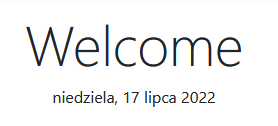
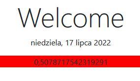

Laboratorium 3. Tworzenie aplikacji internetowej w architekturze MVC
Cel: ASP.NET Core MVC – modele, kontrolery, widoki Razor, DI, formularze.
Punkty: 12
Wariant IDE: Rider (oczyszczona lokalna kopia instrukcji; usunięto VS2026/VS Code).
- cena jako
decimal - wyliczenia (daty, CSS, przeliczenia) w bloku
@{ } - link w nagłówku do listy elementów
- po dodaniu/usunięciu → redirect do listy
- poprawne dodawanie przy pustej liście
- brak ostrzeżeń o pustych referencjach
Zadanie 3.1. Generowanie nowego projektu MVC
Utwórz projekt ze szablonu „Web App (Model-View-Controller)". Nie wybieraj Razor Pages ani native AOT.
Nazwa np. Lab3 → Create. Profil uruchamiania przełącz na http.
Uruchomienie: Play (profil http) lub dotnet run.
Zadanie 3.2. Silnik widoków Razor
W Views/Home/Index.cshtml zamiast tekstu wprowadzającego wyświetl aktualną datę w formacie długim (PL), np.:

W Views/Shared/_Layout.cshtml rok w stopce ma być zawsze aktualny (@DateTime.Now.Year / zmienna z @{ }).
Zadanie 3.3. Przekazywanie danych ViewData
W HomeController.Index:
ViewData["random"] = Random.Shared.NextDouble();W widoku wyświetl wartość; jeśli > 0,5 – czerwone tło (klasa CSS wyliczona w @{ }). Rzutowanie z object.

Zadanie 3.4. Model Fruit + widok List
Klasa Fruit w Models (bez ceny USD), z [DisplayName], required/init.
Cena: decimal (uwaga prowadzącego; przykład w oryginale miał double).
Scaffolding widoków w Riderze – terminal w folderze projektu:
dotnet add package Microsoft.VisualStudio.Web.CodeGeneration.Design --version 8.0.*
dotnet aspnet-codegenerator view Fruits List -m Fruit -outDir Views/Home --useDefaultLayout(Dla net10 użyj wersji 10.0.* jak w oryginalnej instrukcji.)
Zadanie 3.5. FruitService + singleton
builder.Services.AddSingleton<FruitService>();przed builder.Build().
Zadanie 3.6. DI w HomeController + akcja Fruits
Wstrzyknij FruitService, akcja Fruits() → View(_fruitService.GetFruits()). Adres: /Home/Fruits.
Zadanie 3.7. Identyfikatory
Dodaj Id (int) do Fruit; w konstruktorze serwisu nadawaj kolejne Id.
Zadanie 3.8. Link w nawigacji
<a class="nav-link text-dark" asp-area="" asp-controller="Home" asp-action="Fruits">Fruits</a>Zadanie 3.9. Dodawanie
dotnet aspnet-codegenerator view Create Create -m Fruit -outDir Views/Home --useDefaultLayoutUsuń pole Id z formularza. Akcje GET/POST Create; po sukcesie RedirectToAction("Fruits").
Add() musi działać przy pustej liście (nie wołaj samego Max()).
Zadanie 3.10. Usuwanie
Zostaw tylko link Delete z new { id = item.Id }. Usuwaj po Id, nie po indeksie. Po usunięciu → redirect do listy.
Zadanie 3.11. Zabezpieczenie usuwania
Brak elementu → 404 z kontrolera. Serwis zwraca np. bool sukcesu.
Zadanie 3.12. Sortowanie
Query sort: name / price / sweet. Nagłówki kolumn jako linki asp-route-sort.